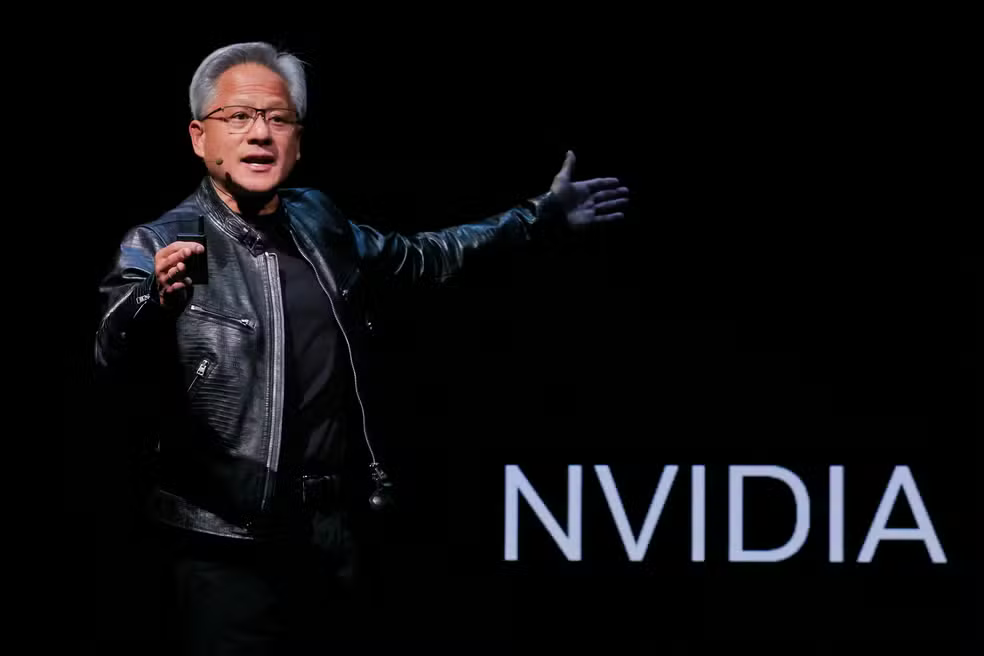

Por Redação g1 — São Paulo
11/11/2026 12h20 Atualizado há 3 horas
Clique para ir para a lista de links.
A Nvidia, uma das maiores empresas de tecnologia do mundo e principal fornecedora de chips usados no desenvolvimento da inteligência artificial, perdeu US$ 1,081 trilhão (cerca de R$ 6,1 trilhões) em valor de mercado entre 29 de outubro e 10 de novembro de 2026, segundo levantamento da Elos Ayta.
Em apenas oito pregões, o valor de mercado da companhia caiu de US$ 5,149 trilhões para US$ 4,068 trilhões, uma redução de aproximadamente 21%. Só nos dois últimos pregões, a perda foi de US$ 430 bilhões (cerca de R$ 2,3 trilhões).
O movimento ocorreu em meio às repercussões de um caso envolvendo o presidente-executivo da empresa, Jensen Huang, uma suposta traição conjugal e suspeitas de espionagem chinesa. O episódio levantou preocupações sobre a segurança das informações da companhia e possíveis riscos para seus negócios.
As suspeitas ainda estão sendo apuradas. A Nvidia informou não ter evidências de que seus segredos corporativos tenham sido comprometidos.
Perda da Nvidia supera valor de todas as empresas da bolsa brasileira
Para dimensionar o tamanho da queda, basta comparar a perda da Nvidia com o valor de mercado de todas as empresas listadas na B3, a bolsa brasileira. Segundo o levantamento da Elos Ayta, as companhias negociadas na bolsa somam aproximadamente US$ 888 bilhões (cerca de R$ 4,8 trilhões) em valor de mercado. Isso significa que a Nvidia perdeu, em apenas oito pregões, um valor equivalente a aproximadamente 1,22 vezes o total de todas as empresas brasileiras listadas na bolsa.